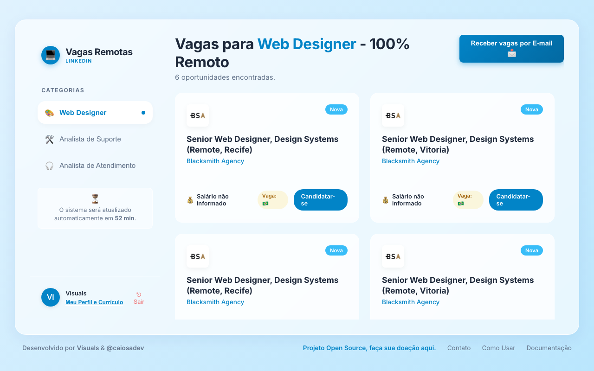
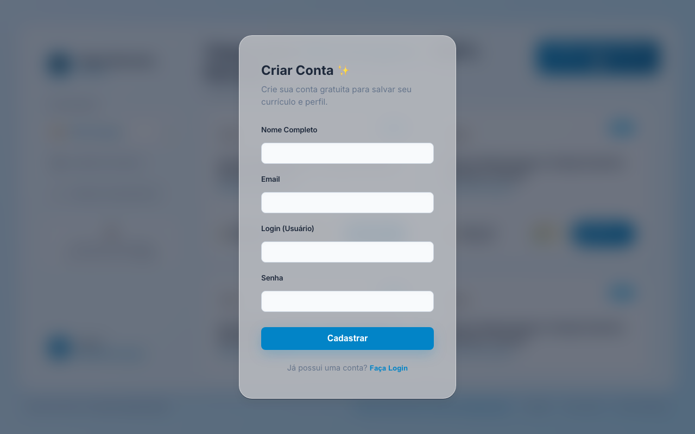
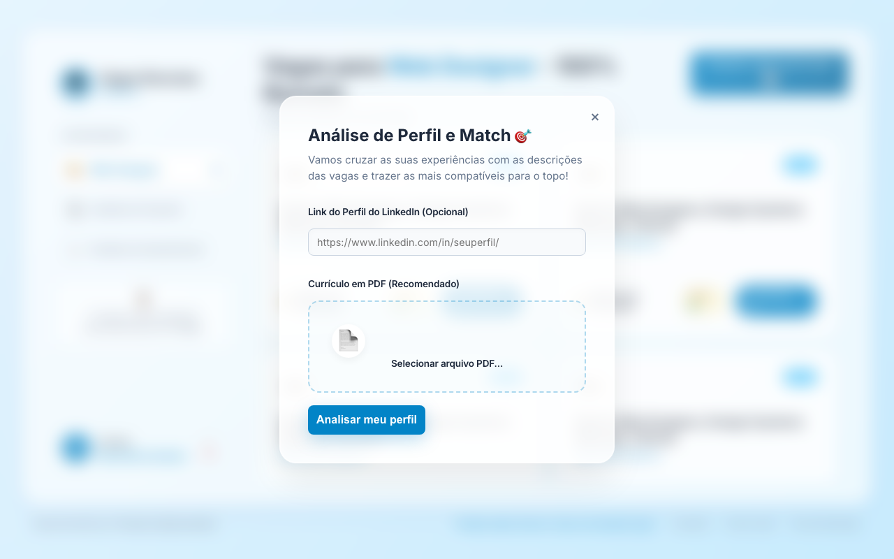
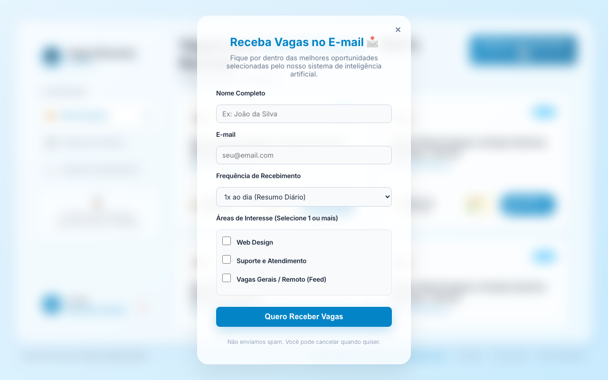

Aprenda a aproveitar ao máximo o seu novo assistente de vagas.
O painel de vagas é atualizado de hora em hora. Aqui, as vagas mais exclusivas e com menor concorrência (menos pessoas inscritas) aparecem sempre no topo para você sair na frente!
Na lateral esquerda, você pode navegar pelas diferentes categorias, como Web Design ou Suporte.

Para desbloquear as ferramentas avançadas, clique no botão "Meu Perfil e Currículo", localizado no menu lateral (lado esquerdo inferior).
Você pode fazer o seu cadastro seguro em segundos usando apenas e-mail e senha.

Depois de acessar seu perfil, envie o seu Currículo em PDF. Nossa inteligência artificial fará uma varredura completa nele.
A partir daí, ao voltar para o painel principal, você notará uma "Porcentagem %" ao lado de cada vaga. Esse é o seu Score de Afinidade, indicando quais vagas combinam perfeitamente com as suas habilidades!

Não quer ficar olhando a plataforma o dia todo? Sem problemas! No canto superior direito, clique em "Receber vagas por E-mail".
Você poderá selecionar suas áreas favoritas e a frequência (como 1x ao dia ou até 5x) e nosso sistema separará as melhores oportunidades e enviará na sua caixa de entrada.
